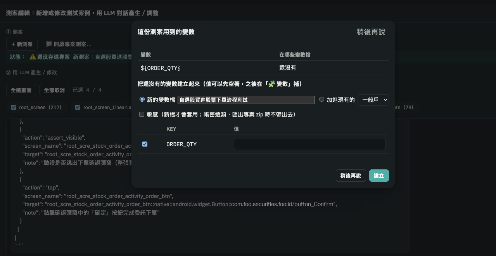
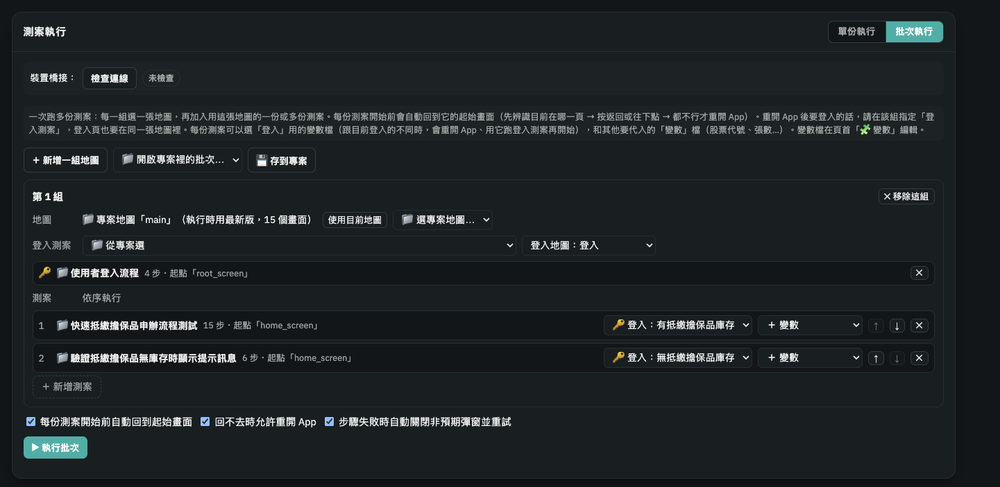

手機 App 自動化測試工具使用說明
還沒裝好環境的話，先照安裝步驟做到 doctor 沒有失敗項目。
下面的指令都分兩種寫法：uv 和 venv + pip，照你安裝時用的方式選。用 venv + pip 的話，每次開新的終端機要先啟用 .venv（macOS：source .venv/bin/activate，Windows：.venv\Scripts\Activate.ps1）。
這套工具做什麼
不用手寫 selector 的手機 App UI 自動化測試工具。它掃描 App 畫面上的元件，用 LLM 幫沒有 id 的元件寫用途說明，整理成「畫面地圖」。測案只要寫「在哪個畫面點哪個元件」，執行時工具會依序用原生 id、XPath、鄰近文字、座標找到元件。
操作都在一個本機網頁裡完成：
你會拿到什麼
所有團隊共用，裡面沒有任何 App 的資料。
你們 App 的地圖、截圖、測案、批次設定。沒有的話可以從頭建立。
LLM 功能要用，沒有的話其他功能照常能用。
這台電腦、這支手機的設定，含 API key，不要傳給別人。
截圖裡可能有帳號、金額等資訊，所以 App 的資料不放進 git，另外交付。
準備專案
一支 App 的一個平台是一個專案，例如 xxx-ios 和 xxx-android。資料放在 workspace/projects/<專案代號>/，不進 git。
A. 從頭建立
先查待測 App 的 bundle id（iOS）或 package（Android）：
xcrun devicectl device info apps --device 你的UDIDadb shell "dumpsys window | grep mCurrentFocus"再建立專案，它會一步一步問代號、平台、名稱、bundle id／package：
uv run aitest-workspace createaitest-workspace createbundle id 之後可以用 aitest-workspace update <專案代號> --bundle_id ... 改。填錯的話連線會失敗。
新專案的地圖是空的，兩種方式補畫面：
- 網頁手動建：地圖檢視的節點詳情按「🌱 從這裡點出新畫面…」。
- 自動爬蟲 待驗證：這個流程還沒有實際測過，結果可能跟這裡寫的不一樣，遇到問題請回報給交付窗口。關掉網頁伺服器、自己開 Appium（
appium --address 127.0.0.1），手機停在起始畫面，先用小範圍試：uvuv run aitest-crawl --project <專案代號> --map main --root_name 首頁 --max_depth 1 --max_screens 5 --safe_keywordsvenv + pip（先啟用 .venv）aitest-crawl --project <專案代號> --map main --root_name 首頁 --max_depth 1 --max_screens 5 --safe_keywords
連正式環境或真實帳號時一定要加 --safe_keywords（跳過下單、送出、確認這類按鈕），可以先加 --dry_run 看它要點哪些。重爬同一張地圖會整張蓋掉（會先備份到 backups/），分功能爬時換 --map 名稱。
B. 有交付的專案 zip
- 只開網頁、不接手機或是本身已經啟動 Appium：
uv
uv run aitest start --no-appiumvenv + pip（先啟用 .venv）aitest start --no-appium - 頁首按「📂 匯入專案 zip」，選拿到的 zip。
- 終端機按
Ctrl+C，之後照每次使用帶專案代號啟動。專案代號用uv run aitest-workspace list查（venv + pip：aitest-workspace list）。
每次使用
- 手機接上、解鎖，打開待測 App。
- 帶專案代號啟動，會自動開 Appium、網頁伺服器和瀏覽器：
uv
uv run aitest start <專案代號>venv + pip（先啟用 .venv）aitest start <專案代號> - 終端機視窗要一直開著，用完按
Ctrl+C。
| 常用選項 | 作用 |
|---|---|
--no-appium | 不啟動 Appium，只看地圖、編輯測案(或是在另外的終端機已經啟動 Appium) |
--no-browser | 不自動打開瀏覽器 |
--port 8768 | 8767 被佔用時換 port |
--platform android | 沒帶專案代號時，指定網頁伺服器接 Android（不加就是 iOS） |
網頁伺服器在啟動的那一刻就決定要接 iOS 還是 Android，之後不能在網頁上切換。帶專案代號時照專案的平台；沒帶的話一律是 iOS，而網頁會打開這個瀏覽器上次用的專案。所以上次用的是 Android 專案，或打算進網頁後再選 Android 專案的話，至少要加 --platform android：
uv run aitest start --platform androidaitest start --platform android平台跟專案對不上時，網頁頁首會提示「專案是 Android，但 viewer_server 目前接的是 iOS」，可以看地圖、編輯測案，但操作手機會被擋下來。這時在終端機按 Ctrl+C，用正確的平台重新啟動。
- 網頁要從
http://127.0.0.1:8767/開，不要直接雙擊 HTML 檔。 - 網頁伺服器開著時會佔用手機連線，不要同時跑
crawl_app_tree.py、capture_screen_map.py。
網頁四個分頁
地圖檢視
- 頁首選「專案」和「地圖」。一個專案可以有好幾張地圖，「⚙ 管理地圖」新增、改名、複製、刪除。
- 點節點看畫面和元件，點截圖可以直接選元件。修改會自動存檔。
測試情境產生
勾選畫面後按「分析並產生情境列表」，每個情境旁的按鈕會帶到測案編輯開一份新測案。
測案編輯
- 「＋ 新測案」「📁 開啟專案測案」或「📂 匯入測案 JSON」。
- 勾選相關畫面，用自然語言描述流程讓 LLM 產生或修改，可以附流程圖或規格書。 待優化
- 「💾 存到專案」，或「➡ 送去執行」直接試跑。
prompt 怎麼寫
用一般的話描述「在哪個畫面做什麼、最後要看到什麼」就好，畫面要先在上方勾選。幾個範例：
| prompt 範例 | LLM 會怎麼處理 |
|---|---|
| 幫我在自選股買入一檔股票，委託數量由我決定，並驗證後續是否有出現委託回報的跑馬燈 | 委託數量寫成變數（例如 ${ORDER_QTY}），執行時從變數檔代入；送出委託後接一個跑馬燈驗證 |
| 幫我使用帳號密碼做登入 | 帳號、密碼寫成 ${LOGIN_ID}、${LOGIN_PASSWORD}，不會寫死；這份就可以當批次的登入測案 |
| 幫我建立快速抵繳擔保品的測案，過程中有幾個畫面會出現 loading，最多等八秒 | 在 loading 之後的驗證步驟加上等待時間，時間內反覆檢查，一出現就往下走 |
描述裡用到下面這些說法，LLM 會對應成特定的步驟：
| 說法 | 產生的步驟 | 說明 |
|---|---|---|
| 點、點擊、按 | 點擊 | 點畫面上的按鈕、選項、清單項目 |
| 輸入、填入 | 輸入文字 | 點了才跳出輸入列的欄位（例如顯示「0 股」的數量）也直接這樣說，不用另外說「先點開」 |
| 由我決定、用變數、帳號密碼 | 變數 ${KEY} | 值不寫進測案，執行時從變數檔代入，見下方「測案裡的變數」。想指定名稱可以說「張數用變數 QTY」 |
| 驗證出現、確認有顯示 | 驗證元件可見 | 只檢查有沒有出現，不看內容 |
| 驗證文字包含「…」、顯示「…」 | 驗證文字內容 | 檢查元件上的文字，例如狀態變成「委託取消」 |
| 跑馬燈、通知橫幅、委託回報 | 跑馬燈驗證 | 只出現幾秒就消失的訊息。好幾個跑馬燈要照順序出現時，加「依序」或「先…再…」 |
| 最多等 X 秒、等待 X 秒、會有 loading | 驗證步驟加上等待時間 | 避免 loading 還沒結束就判定失敗。工具沒有單純「停幾秒」的步驟，是在驗證時最多等這麼久、一出現就繼續；LLM 通常會比你說的再多留幾秒緩衝 |
等待時間只能加在驗證步驟上。loading 結束後要點某個按鈕的話，可以這樣說：「loading 完先確認『下一步』按鈕出現，最多等八秒，再點它」，讓 LLM 先產生一個會等待的驗證步驟，再點擊。
帳號密碼、委託數量、股票代號這類每次可能換的值，測案裡寫成 ${KEY}，執行時換成選的變數檔裡的值（頁首「🧩 變數」編輯）。可以用在輸入文字、驗證文字、跑馬燈驗證的值。
- LLM 產生測案時，帳號密碼一定會寫成變數，股票代號、張數這類測試資料通常也會，但由 LLM 判斷、不保證；想確保的話在對話裡直接說「張數用變數 QTY」。
- 產生的測案用到還沒有值的變數時，會跳出視窗讓你建立變數檔，值要自己填（LLM 的回覆會列出你提到的值）；也可以「稍後再說」，之後按「🧩 檢查變數」叫回來。
- 執行時：單份在「變數檔」選；批次在每份測案旁的「登入：」和「＋ 變數」選。

${ORDER_QTY}）時跳出的視窗（點圖片放大，可以縮放）測案執行
分成「單份執行」和「批次執行」兩種，在分頁右上角切換。
單份執行：跑一份測案
- 手機先停在測案第一步的畫面（例如已經登入、在首頁）。
- 選要跑的測案，測案用到變數的話在「變數檔」選要代入的檔。
- 按「▶ 執行測試」。建議勾「執行前先檢查手機是否停在第一步的畫面」，畫面不對時整份不執行，不會在錯的畫面上亂點。
單份執行不會自動登入，登入狀態要自己先準備好。適合剛寫好一份測案、想先試跑的時候。
批次執行：一次跑多份測案，可以換帳號
把多份測案排好依序執行，每份開始前會自動把手機帶回它的起始畫面；每份測案也可以指定要用哪個帳號登入，所以同一份測案可以用不同帳號各跑一次。
- 準備帳號：在頁首「🧩 變數」為每個帳號建一個變數檔，裡面放
LOGIN_ID、LOGIN_PASSWORD等登入資料。 - 準備登入測案：寫一份「從登入頁輸入帳號密碼、登入成功」的測案，帳號密碼用
${LOGIN_ID}、${LOGIN_PASSWORD}，不要寫死。所有帳號共用這一份。 - 建立批次：「＋ 新增一組地圖」→ 選地圖 →「登入測案」選上一步那份（登入頁另外建成一張地圖的話，旁邊「登入地圖」選它）→ 按測案清單下方的「＋ 新增測案」，從下拉選單選要跑的測案（要加幾份就按幾次，用 ↑↓ 調整順序、✕ 移除）。
- 每份測案選帳號：測案旁的「登入：」下拉選單選要用的帳號變數檔，不需要登入的維持「登入：不需登入」；委託數量、股票代號這類其他變數用旁邊的「＋ 變數」加。
- 按「▶ 執行批次」。可以「💾 存到專案」，下次從「📁 開啟專案裡的批次」叫回來。
換帳號的規則
- 連續幾份用同一個帳號時只會登入一次，不會每份都重登。
- 換帳號的方式是重開 App 再跑登入測案，前提是這支 App 重開後會回到未登入的狀態；重開後還保持登入的話，換帳號會失敗，請回報。
- 選的變數檔不存在、或選了帳號卻沒指定登入測案，那份測案會標成 SKIP 並寫原因，其他測案照常跑；執行前的確認視窗也會先提醒。
- 「🧩 變數」建兩個變數檔：「有抵繳擔保品庫存」和「無抵繳擔保品庫存」，各放一組帳號密碼。
- 批次裡加入兩份測案：「快速抵繳擔保品申辦流程測試」的「登入：」選「有抵繳擔保品庫存」、「驗證抵繳擔保品無庫存時顯示提示訊息」選「無抵繳擔保品庫存」，登入測案共用「使用者登入流程」這一份。
- 執行時，第一份前會重開 App、用第一個帳號登入；換到第二份時帳號不同，會再重開 App、用第二個帳號登入。結果裡每份測案都會標出用的帳號。

團隊內交換資料
| 想做的事 | 匯出 | 對方匯入 |
|---|---|---|
| 給整個專案 | 頁首「⬇ 匯出專案 zip」 | 「📂 匯入專案 zip」 |
| 同步彼此的成果 | 頁首「⬇ 匯出專案 zip」 | 「📂 匯入專案 zip」→「合併」，衝突的項目逐一選 |
| 只更新一張地圖 | 地圖檢視「⬇️ 匯出目前地圖」 | 「📂 匯入地圖」 |
| 給一份測案 | 測案編輯「⬇ 匯出 JSON」 | 測案編輯「📂 匯入測案 JSON」 |
zip 裡有畫面內容，只在團隊內部傳，不要 commit 進 repo。被取代的地圖會先備份到 backups/。
更新工具
git pull
uv syncgit pull
pip install "appium-python-client>=6.0.7" "google-genai>=2.25.0" "pillow>=12.3.0" "selenium>=4.49.0"pip 的套件清單跟安裝第 3 步的一樣。workspace/ 和 config.toml 不會被動到。工具由交付窗口統一維護，需要修改請回報，不要直接改程式。
常見問題
| 症狀 | 處理方式 |
|---|---|
driver 有裝，卻報 Could not find a driver for automationName ... | 開了好幾個 Appium。macOS：lsof -nP -iTCP:4723 -sTCP:LISTEN，Windows：netstat -ano | findstr :4723，只留一個 PID，其他用 kill／taskkill /PID <PID> /F 關掉 |
| 網頁警告「專案是 Android，但 viewer_server 目前接的是 iOS」 | 啟動時沒帶專案代號（預設 iOS）。Ctrl+C 後用 aitest start <專案代號> 重開 |
| port 8767 被佔用 | 關掉另一個視窗的伺服器，或加 --port 8768 |
Windows Ctrl+C 後下次連不上 | 關掉所有 Appium 視窗再重開 |
| Android BlueStacks 看不到裝置 | 重開過 BlueStacks，再 adb connect 127.0.0.1:5555 |
| 操作沒反應、卡住 | 手機保持解鎖；iOS 確認畫面有 Automation Running |
| LLM 找不到模型 | 預覽版模型下架，config.toml 的 [llm] model_pro 換成正式版 |
安裝時的問題見安裝常見問題，其他見 docs/TROUBLESHOOTING.md。
已知限制
- 爬蟲在原地切換內容、沒有返回鍵的畫面可能回不去，改用手動建樹。
- 重爬同一張地圖會蓋掉手動加的節點，要從
backups/補回。 - 手動建樹勾「同時捲動收集完整清單」時，元件框會跟截圖對不齊，預設不勾。
- 一次只能有一個程式連手機。
- Android 爬蟲還沒在實際 App 上跑過，只做過離線驗證。
延伸閱讀 待更新
| 文件 | 內容 |
|---|---|
README.md | 檔案總覽、每支程式的細節、所有指令選項 |
docs/AUTOMATION_ARCHITECTURE_FLOW.md | 整體資料流程 |
docs/JUDGMENT_LOGIC_REFERENCE.md | 畫面解析和元件定位的判斷邏輯 |
docs/CRAWLER_TREE_HANDOFF.md | 自動爬蟲的完成度和已知問題 |
docs/TROUBLESHOOTING.md | 疑難排解 |
docs/LLM_USAGE_ESTIMATE.md | LLM 用量估算 |